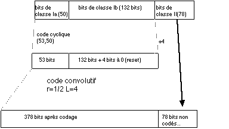

Les techniques de codage utilisées pour protéger le message contre les nombreuses interférences du canal ne sont pas les mêmes selon si c'est de la parole qui est transmise, ou des données numériques. Commençons par étudier les techniques de codage des messages vocaux.
Rappelons que l'échantillonneur vocal a transformé la parole en blocs de 260 Bits, correspondant à 20 ms de parole chacun. Les bits de ces blocs ont été répartis en trois classes , en fonction de leur "sensibilité" aux erreurs:
Mais ce n'est pas tout ! Pour s'assurer un peu plus encore du bon convoyage de notre message, nos échantillons de 456 bits vont être transmis entrelacés sur 8 bursts temporels consécutifs.
Maintenant que le message est enfin prêt à être transmis, encore faut-il le transformer en signal physique. La technique de modulation choisie pour cette opération est appelée GMSK. Cette technique de modulation fut choisie parce qu'elle est un bon compromis en termes d'occupation spectrale et de complexité de mise en oeuvre.
Le décodage à réception de ce message est fait beaucoup plus complexe que l'encodage lui-même. En particulier, le codage convolutif exige l'implémentation de l'algorithme de Viterbi, qui est relativement complexe.
